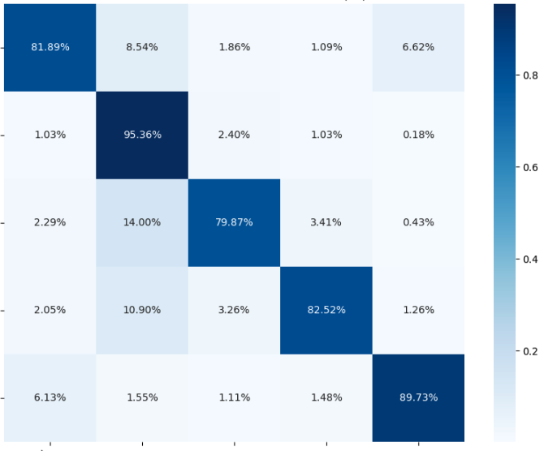

Clasificación Automática de Quejas Financieras con DistilBERT

Resumen del proyecto
El CFPB en Estados Unidos recibe miles de quejas de consumidores sobre productos financieros todos los días. Clasificarlas a mano es lento y caro, y cada persona escribe distinto, lo que lo hace aún más difícil. Lo que buscamos fue armar un modelo que lea el texto de la queja y le asigne automáticamente la categoría correcta entre cinco opciones: tarjetas de crédito, reportes crediticios, cobro de deudas, hipotecas y banca minorista.
Fue el proyecto final de la materia Técnicas de IA: Deep Learning en UTEC, y lo hicimos entre Andrea Aranda, Yuri Biardo, y yo. Trabajamos con más de 162.000 quejas reales del CFPB. El desafío principal fue que los datos venían muy desbalanceados: una sola categoría (credit_reporting) tenía el 56% de los casos.
Para resolverlo, usamos DistilBERT, una versión más liviana de BERT que mantiene casi todo su rendimiento, y le implementamos un Weighted Trainer que le da más peso a las categorías con menos datos en la función de pérdida.
El modelo terminó con un 89.89% de accuracy y un F1 macro de 0.87, o sea que clasifica bien casi 9 de cada 10 quejas y lo hace de forma pareja entre las cinco categorías. Los errores que comete tienen sentido: las categorías que más se confunden son las que comparten vocabulario financiero, como deudas y reportes crediticios.